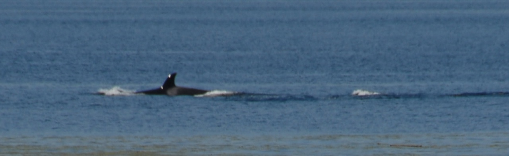

|
This pod was seen Sunday August 28, 2011 going south in Case Inlet. These pictures are from Herron Island looking West to Harstine Island. To learn more about our Orcas and to report sightings, go to: http://www.orcanetwork.org/ and http://www.orcanetwork.org/sightings/reportpage.html. Photos by Laurie West.
|